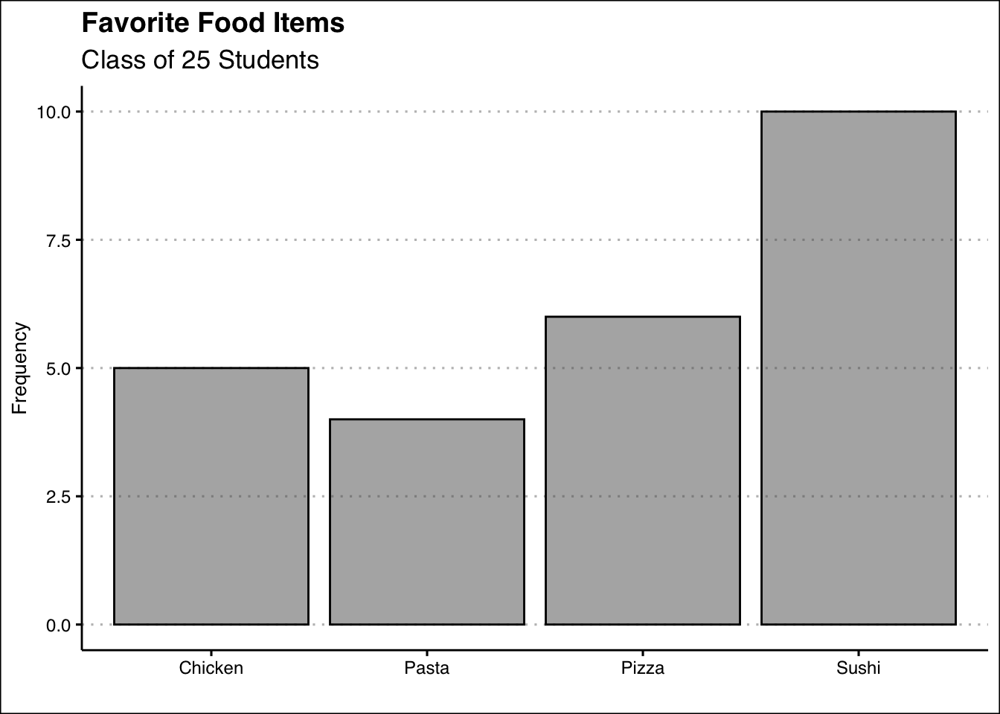
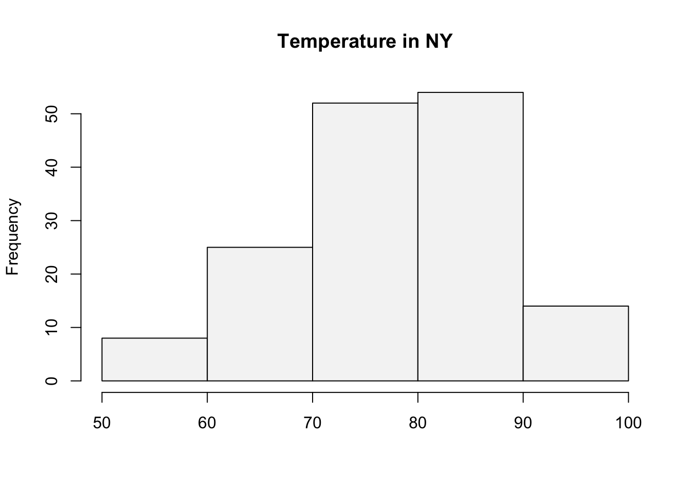
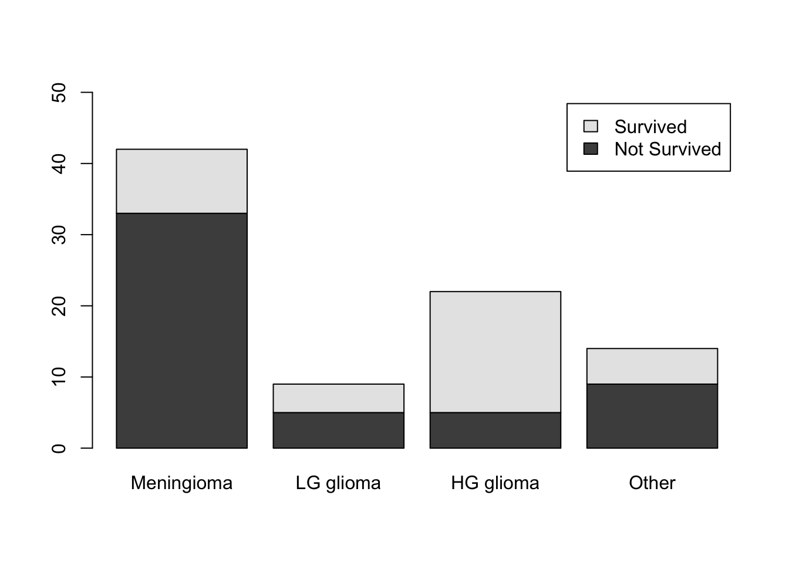

library(ISLR2)
table(BrainCancer$diagnosis)
Meningioma LG glioma HG glioma Other
42 9 22 14 A frequency distribution is a tabular summary of data showing the number of items in each of several non-overlapping classes.
A bar plot illustrates the frequency distribution of qualitative data.
Is an illustration for qualitative data.
Includes the classes in the horizontal axis and frequencies or relative frequencies in the vertical axis.
Has gaps between each bar.
A histogram illustrates the frequency distribution of quantitative data.
Is an illustration for quantitative data.
There are no gaps between the bars.
The number, width and limits of each class must be determined.
The table() command generates frequency distributions or contingency tables if two variables are used.
The prop.table() command generates relative frequency distributions from an object that contains a table.
The cut() function generates class limits and bins used in frequency distributions (and histograms) for quantitative data.
Base R has the barplot() function for categorical variable, histogram() function for numerical data, and the plot() function for line charts or scatter plots. Below are some arguments that are helpful when plotting.
legend() is a function to customize the legend of a graph. This argument may be used with the plot(), barplot() or histogram() functions.
The following exercises will help you practice summarizing data with tables and simple graphs. In particular, the exercises work on:
Developing frequency distributions for both categorical and numerical data.
Constructing bar charts, histograms, and line charts.
Creating contingency tables.
Answers are provided below. Try not to peak until you have a formulated your own answer and double checked your work for any mistakes.
Install the ISLR2 package in R. You will need the BrainCancer data set to answer this question.
You will need the airquality data set (in base R) to answer this question.
You will need the Portfolio data set from the ISLR2 package to answer this question.
Start by loading the ISLR2 package. To construct the frequency distribution table, use the table() function.
library(ISLR2)
table(BrainCancer$diagnosis)
Meningioma LG glioma HG glioma Other
42 9 22 14 The relative frequency distribution can be easily retrieved by saving the frequency table in an object and then using the prop.table() function.
freq<-table(BrainCancer$diagnosis)
prop.table(freq)
Meningioma LG glioma HG glioma Other
0.4827586 0.1034483 0.2528736 0.1609195 To construct the bar chart use the barplot() function in R.
barplot(freq, col = "#F5F5F5", ylim=c(0,50))
Use the table() function one more time to create the contingency table for the two variables.
(freq2<-table(BrainCancer$status,BrainCancer$diagnosis))
Meningioma LG glioma HG glioma Other
0 33 5 5 9
1 9 4 17 5To get the survival rates, we can use the prop.table() function once again.
prop.table(freq2,margin = 2)
Meningioma LG glioma HG glioma Other
0 0.7857143 0.5555556 0.2272727 0.6428571
1 0.2142857 0.4444444 0.7727273 0.3571429Use the barplot() function one more time to construct the stacked column chart.
barplot(table(BrainCancer$status,BrainCancer$diagnosis),
legend.text = c("Not Survived","Survived"), ylim=c(0,50))Create a vector containing the intervals desired by using the seq() function.
intervals <- seq(50, 100, by=10)Next use the cut() function to create the cuts for the histogram.
intervals.cut <- cut(airquality$Temp, intervals, left=FALSE, right=TRUE)The frequency distribution can be obtained by using the table() function on the interval.cut object created above.
table(intervals.cut)intervals.cut
(50,60] (60,70] (70,80] (80,90] (90,100]
8 25 52 54 14 To get the relative frequency table, start by saving the proportion table into an object.Then you can use the prop.table() function.
freq<-table(intervals.cut)
prop.table(freq)intervals.cut
(50,60] (60,70] (70,80] (80,90] (90,100]
0.05228758 0.16339869 0.33986928 0.35294118 0.09150327 For the cumulative distribution you can use the cumsum() function on the frequency distribution.
cumulfreq<-cumsum(freq)
cumulfreq (50,60] (60,70] (70,80] (80,90] (90,100]
8 33 85 139 153 Lastly, for the relative cumulative distribution table, you can use the cumsum() function on the relative frequency table.
cumsum(prop.table(freq)) (50,60] (60,70] (70,80] (80,90] (90,100]
0.05228758 0.21568627 0.55555556 0.90849673 1.00000000 Use the hist() function to create the histogram.
hist(airquality$Temp, breaks=intervals,
right=TRUE,col="#F5F5F5", main="Temperature in NY", xlab="")
You can use the plot() function to create a plot of Portfolio Y. The line for Portfolio X can be added with the lines() function.
plot(Portfolio$Y,
x=seq(1901,2000), type="l",
col="black", xlab="", ylab="% Return", ylim=c(-3,3),
xlim=c(1901,2000), lwd=2, axes = F)
axis(side=1, labels=TRUE, font=1,las=1)
axis(side=2, labels=TRUE, font=1,las=1)
lines(Portfolio$X, x=seq(1901,2000), type="l",
col="darkgrey", lwd=2)
legend(x = "bottomleft",
legend = c("Port Y", "Port X"),
lty = c(1, 1),
col = c("black", "darkgrey"),
lwd = 2,
bty="n") 